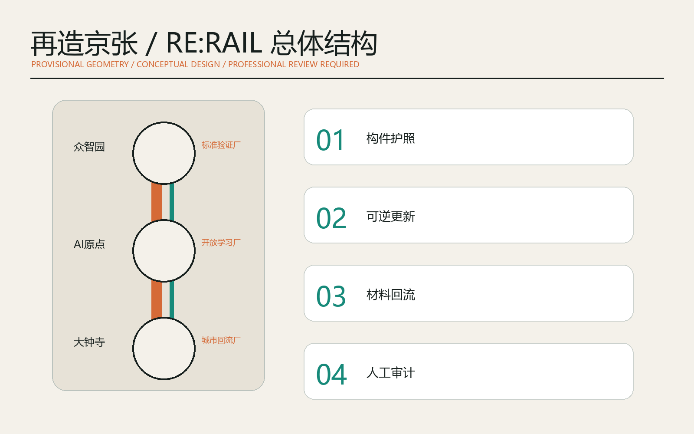
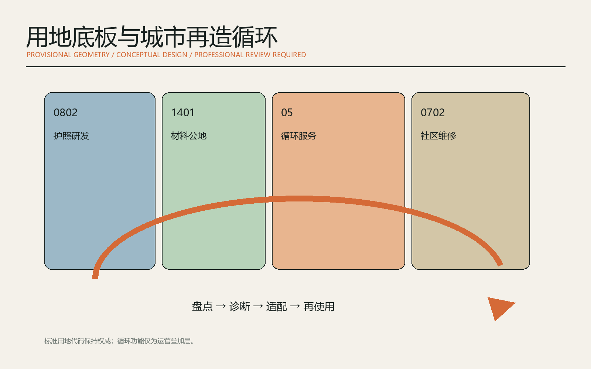
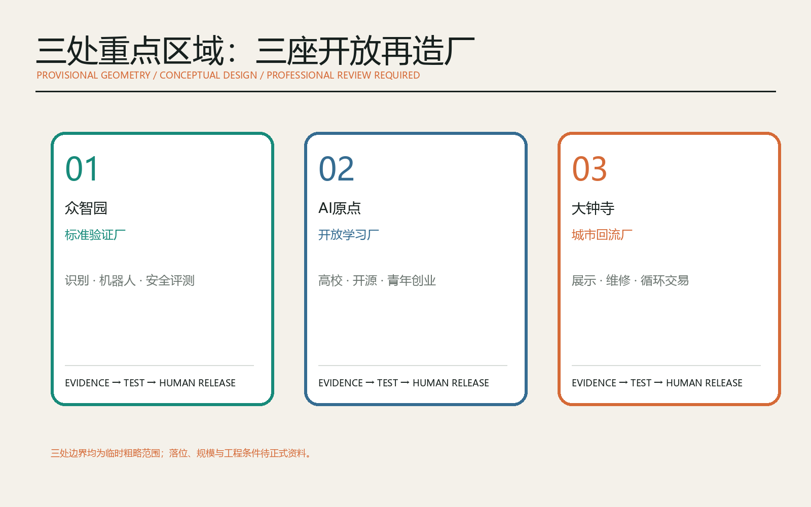
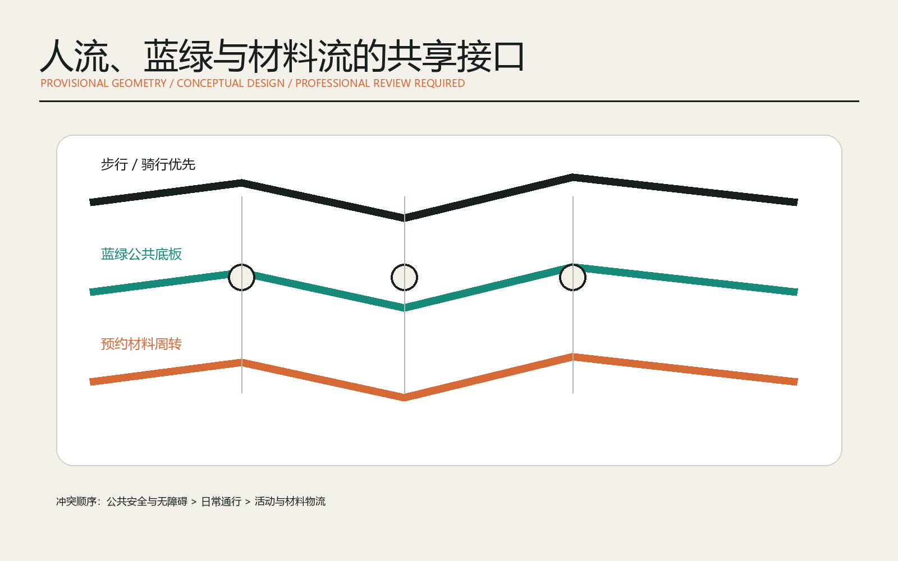
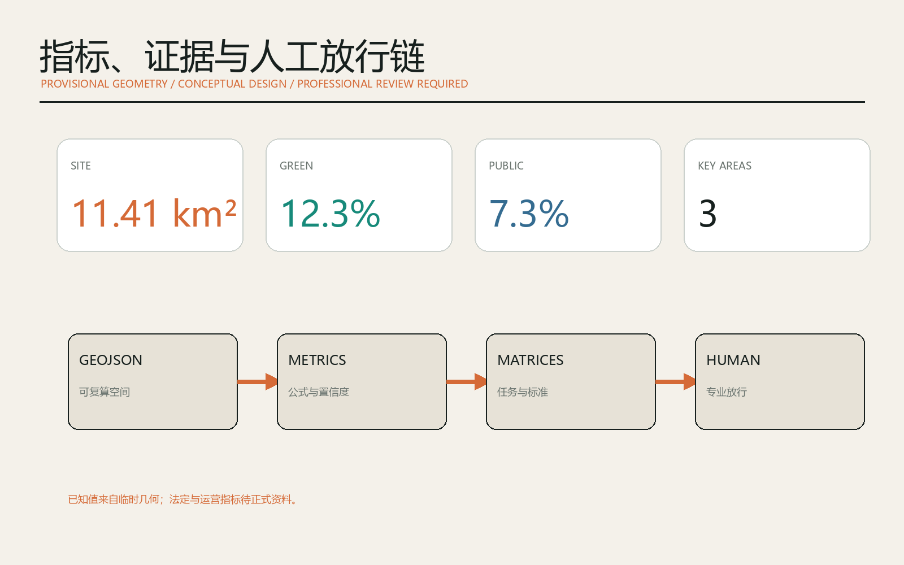

总体结构

OPEN URBAN DESIGN / 2026
AI 循环建造与城市更新公地
临时粗略边界，仅用于生成、展示和讨论；不得作为官方红线、精确面积或审批依据。





建筑体检、构件护照、可逆节点、机器人拆解、采购比选、维修翻译、无障碍共创、材料图书馆、共享工具、活动回收、文化导览、公开复盘。
证据门、专业门、公共利益门；任一不满足即可暂停、缩小或退出。
标准验证、开放学习、城市回流，由科技服务翼和场景赋能翼共同支撑。